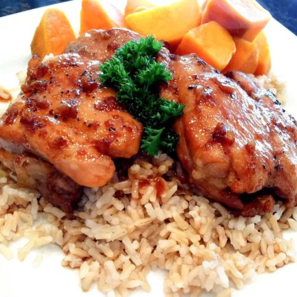
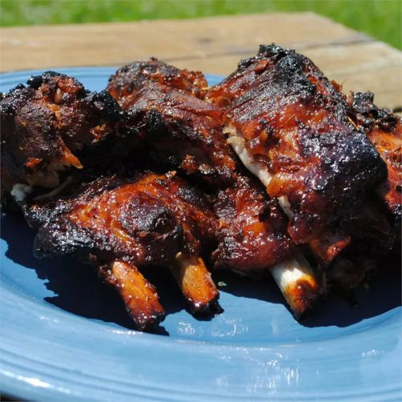

|  |
GRILLED CHICKEN ADOBO
- TOTAL TIME: 50 minutes
- SERVINGS: 8
STEP #1: In an outdoor grill, preheat and grate oil.
STEP #2: Mix soy sauce, water, vinegar, honey, garlic, bay leaves, and pepper in a pot the boil. Place the chicken into the pot, then reduce the heat a bit, cover the pot, and cook for 35-40 minutes. (NOT IN GRILL YET)
STEP #3: Remove chicken and drain on towels. Remove bay leaves from mixture and then continue to boil and cook until 1 1/2 cups.
STEP #4: Place chicken on grill for 5 minutes on each side until crispy and brown. Serve with soy sauce mixture.
-
Link to picture: woah!
|
- 3 pounds skinless, boneless chicken thighs
- 1 ½ cups soy sauce
- 1 ½ cups water
- ¾ cup vinegar
- 3 tablespoons honey
- 1 ½ tablespoons minced garlic
- 3 bay leaves, and ½ teaspoon black pepper
|
|  |
FILIPINO RIBS
- TOTAL TIME: 2 hours 15 minutes
- SERVINGS: 12
STEP #1: In a large stock pot, place ribs, 2 wedged onions, 4 tbsp of soy sauce, pepper, and star anise pods. Add water and boil. Reduce heat to medium low, cover the pot, and simmer until ribs are tender (1 1/4 hours). Stir time-to-time.
STEP #2: While step 1 happens, heat oil in a skillet over medium heat and inside, add the remaining onion and saute until onion is soft. Blend in ginger, honey, sugar, Worcestershire sauce, lemon juice, and remaining soy sauce. Cook and stir, then remove from heat.
STEP #3: Preheat oven to 400 degrees F.
STEP #4: Remove ribs from pot and place in a baking dish. Brush ribs with honey mixture and bake in oven for 30 minutes or until ribs are well-glazed.
-
Link to picture: delish!
|
- 6 pounds pork spareribs, and 2 medium onions, cut into wedges
- 6 tablespoons soy sauce, divided, and ¼ teaspoon ground black pepper
- 6 whole star anise pods, and ½ cup water
- 1 tablespoon vegetable oil, and 1 medium onion, finely chopped
- 1 tablespoon grated fresh ginger, and ½ cup honey
- 2 tablespoons brown sugar, 1 tablespoon Worcestershire sauce, and 1 tablespoon lemon juice
|